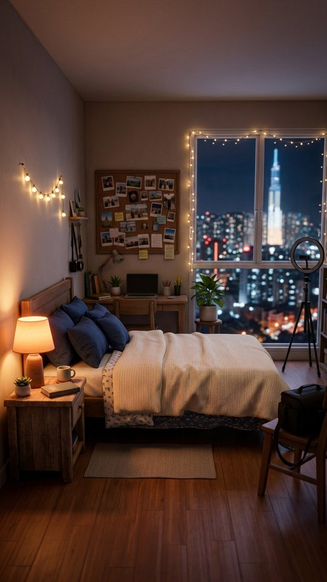
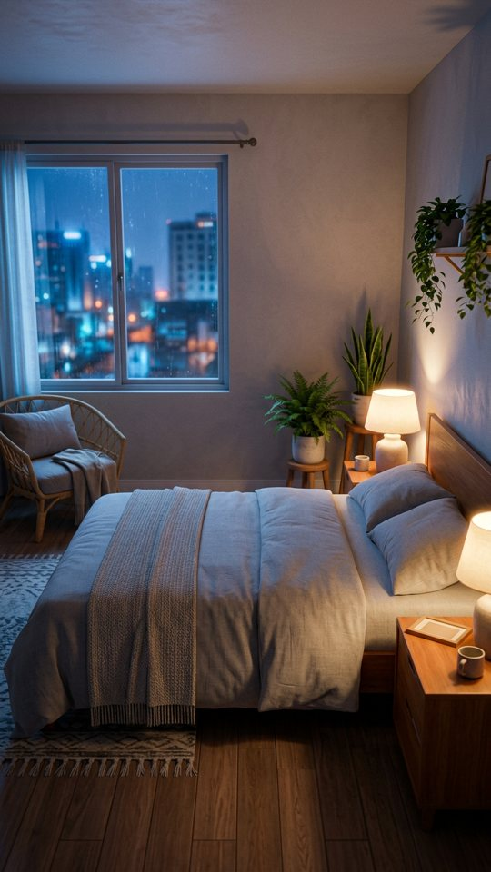

Snap Saigon · The PI Job · Part 1 "The Booking" · storyboard v5 · your flow notes applied · 30 Oct 2026
Part 1 v5: your notes applied, texts as WhatsApp, no video call
Your flow notes are in: she declines the call and texts back instantly, Trâm briefs her by WhatsApp text, the swipe men have photos and ick-worthy bios, and the torso montage is gone. To keep the one-film look, texts now appear as bubbles over the characters own shots (Hân typing, Trâm typing) instead of cutting to flat phone screens. Same room, same outfits.
Plot map: how the viewer follows it
Hân's bedroom, 11:04 pm · dating (pink)Swipes through ick-worthy men (passport bros) → J's blurry body-only photos → match → "he types fast. a man of ac—"
InterruptionAn incoming video call from an unknown number. She declines and texts the number back instantly.
Work · WhatsApp (green)Trâm's texts, shown over Trâm typing in her own room: brief → booking approved → 2 rules → mask flies → "this is so sus" → "Perfect. Remember, only talk to me."
Back to dating (pink)J: "I'll reveal everything tomorrow, including my face" → "…have I ever seen his face?" → Day 1.
Pacing strip · width = seconds on screen · tap a frame to jump to it
Shape: fast 1 s hook → slow, cosy room (1.8 s) → speeds up as the texts arrive → 0.4 s bursts on the joke → long hold on the punchline loop
The fixed set (what was missing before)

Hân's room (master plate). Bed LEFT, lamp LEFT (warm), window RIGHT (cool city), ring light RIGHT. Hân always sits LEFT and faces RIGHT. Navy satin pyjamas in every frame.

Trâm's room (master plate). One camera: a phone propped on the bed, 50mm waist-up. Nightstand RIGHT with the face-down couple photo, window LEFT. Grey tee in every frame.
Every shot is generated from its plate, never from scratch. Two cameras in Hân's room (W wide, M medium/close, 35mm) and one in Trâm's. No "varying the angle for variety".
The prompts, as I'll actually use them
You asked what prompts I'm using. Before, one line each: "static camera, she speaks the line, push-in." That's where the dead, floaty look came from. Now each shot gets camera, timed performance, and what must not move:
TRÂM-TYPING (4 s, no audio; WhatsApp bubbles are added in the edit)
Locked-off propped-phone camera, 50mm waist-up, 2% slow push-in. Trâm looks down at her phone and types with both
thumbs. Beat 1 (0-1.5 s): breezy half-smile, quick thumb taps. Beat 2 (1.5-3 s): she glances up toward the window
for a beat, then back at the phone. Beat 3 (3-4 s): a tiny satisfied nod as she sends. Her face stays in the upper
half of the frame (bubbles sit below). The room, lamp, window and her grey tee do NOT change. Same face.
HÂN-TEXTS-BACK (2 s, no audio)
Waist-up, 50mm, slow 2% push-in. Hân's thumb jabs DECLINE (off-screen), she sighs, then types very fast with both
thumbs, her face sliding into a bright over-polite smile. Mask stays pushed up on her forehead. Warm lamp stays at the
left of frame. The room does NOT change.
HÂN-BOLT (0.9 s)
Same medium framing. Hân jolts upright, hands thrown up, the white sheet mask flies off her forehead and sails to
frame-left, the phone drops into her lap. One quick motion, then freeze on her wide eyes. Everything else stays put.
Every clip is then cut on one timeline with the room tone running underneath, voices EQ'd to the room, and no overlay on any shot that doesn't need one.
The gate before you see any video
One look test first: animate only Trâm-typing and Hân-texts-back (about 24 credits) and check the room, faces, mouths and voice before rendering the rest.
I check each clip against the set bible (layout, pyjamas, lamp side, lens) before it goes in a cut.
Measured against your references: a single visual language, cuts on action or eyeline, voices overlapping the cuts, continuous room sound.
One honest limit: I can't promise "creator quality" from stills. The look test is how we find out cheaply.
Hook bank: a different on-screen hook for each post
Same video, different top line, so each post tests a new angle. The VO stays “You might be wondering how I got here…” in all of them.
“the weirdest booking I've ever taken”
“she paid me to photograph her 'model'. he didn't know.”
“rule #1: don't talk to him. rule #2: only talk to me.”
“POV: your client's request is a little too specific”
“I'm a photographer, not a detective. (day 1 of being a detective)”
“good customer service got me into this”
Tick the ones you like in the notes on panel 1, or add your own.
From the café reel (one continuous scene)
One sound bed runs under every cut. The room tone only changes when the place changes.
Lines cross the cuts: we hear the next person just before we see them.
Screen sides never flip. Hân always faces right, Trâm always faces left, so their texting reads as a conversation across the cut.
Eyelines drive the cuts: she looks at the phone, we see the phone, we see her face again.
From the real-footage edit (why human edits grip)
Open on a question or the strangest image. Here that's the trench coat and fake moustache, then "12 hours earlier".
Uneven rhythm. Hold one shot for about 2 s, then fire 0.4 s bursts. Never a steady 2.5 s beat.
Quick detail inserts: a thumb on the screen, the photo turned face-down, the mask landing.
Real room sound under the voices: the fan, distant scooters, keyboard taps. No sterile silence.
A tiny handheld drift on the close-ups, and a whip zoom on the punchline.
End by looping back to the opening image, plus a question for the comments.